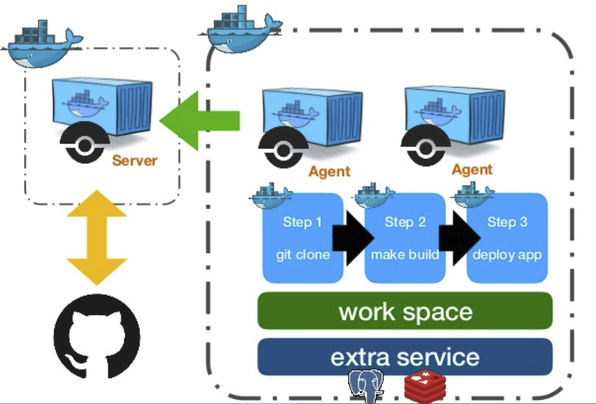
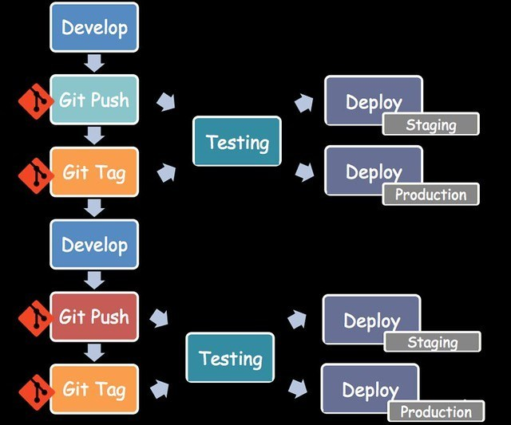

目录
常用¶


Everything is a Docker Container:
对Docker原生支持使的: drone无需在构建脚本中额外增加 docker 相关的命令就能:
1. 使用Docker化的集成环境方便的实现对多语言编译
2. 利用集成Docker环境的优势: 环境隔离、标准化镜像
利益于: 对原生 Docker 支持
Any Source Code Manager
Any Platform
Any Language
One Server, Multiple Agents:
Server与git平台交互, 提供web服务
Agents具体负责相关的编译、部署等操作
当使用用户多、load高时可以扩展Agents来实现水平扩容
在 1.0 版本之后，只需要一个 drone 服务
里面面就内建了 server 及 agent，这很适合用非常小团队快速安装 drone
Configuration as a code:
使用.drone.yml文件来设定测试及部署流程
Pipelines被配置成你提交到git仓库的简单、易读的文件
Pipeline的每一步骤都自动运行在独立的Docker容器中
丰富的插件:
构建后发送消息: DingTalk, Wechat, Gtalk, Email
构建成功后发布: npm, docker, github release, google container...
构建成功后部署: Kubernetes, rsync, scp, ftp...